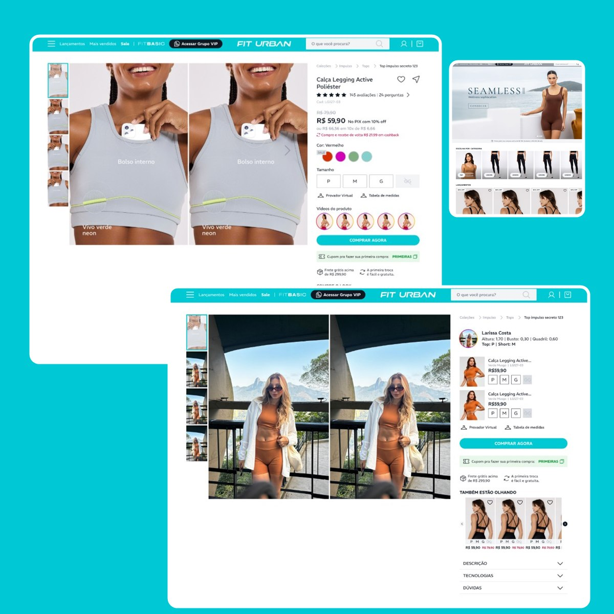
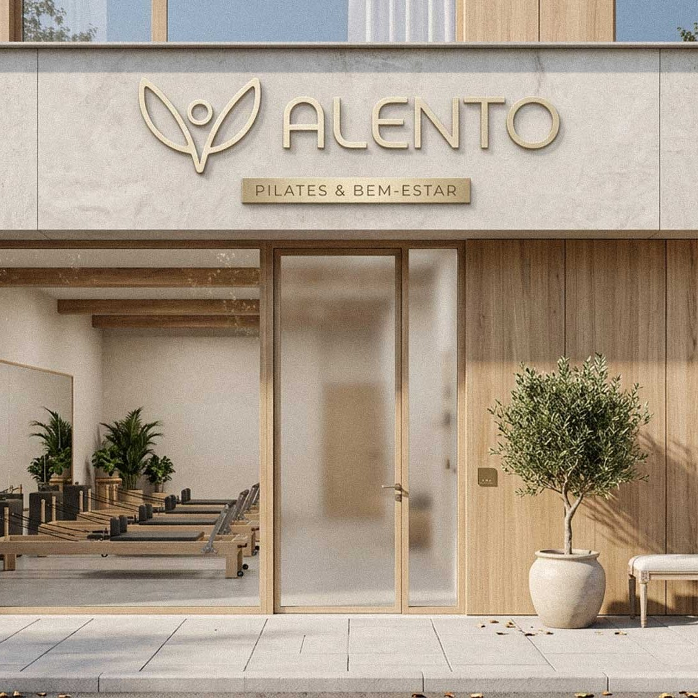
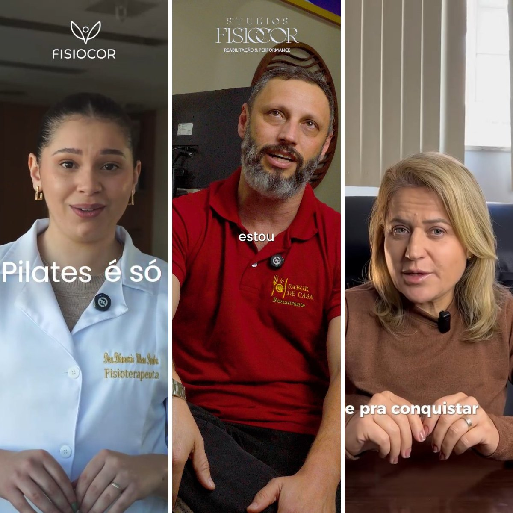
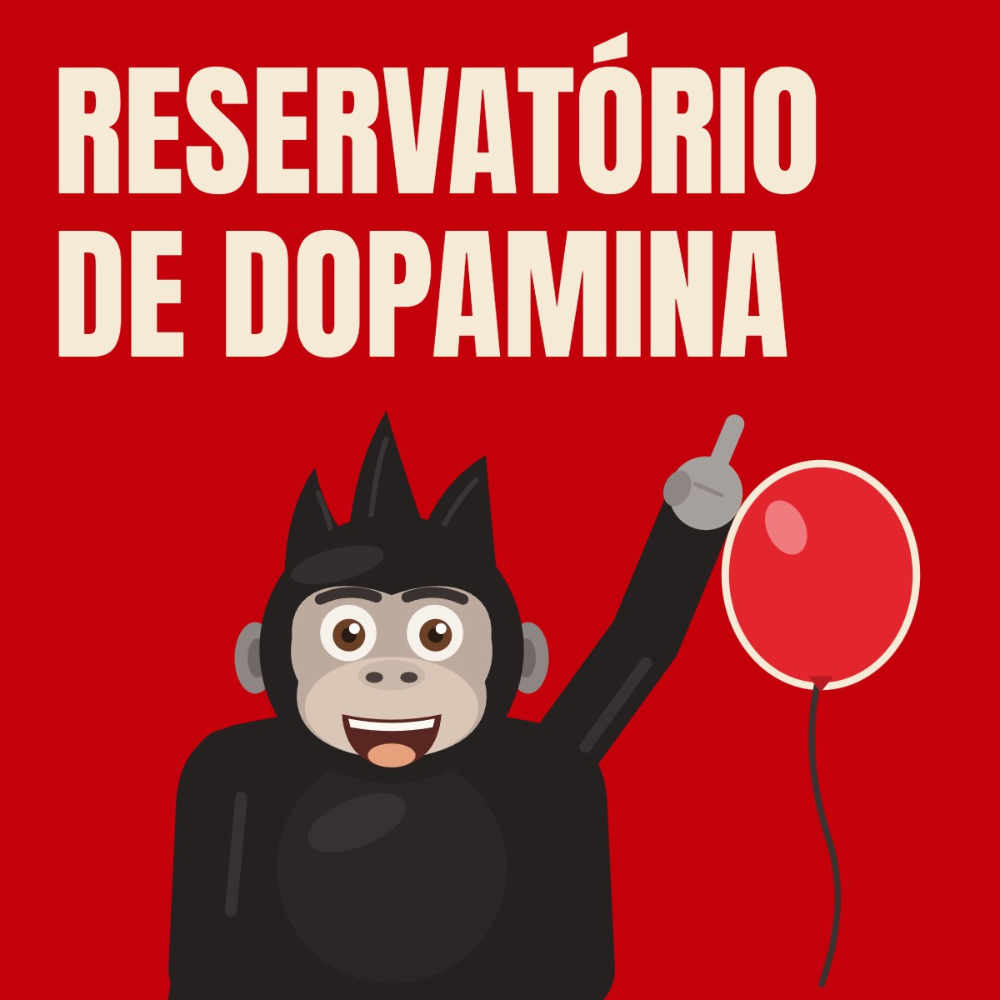
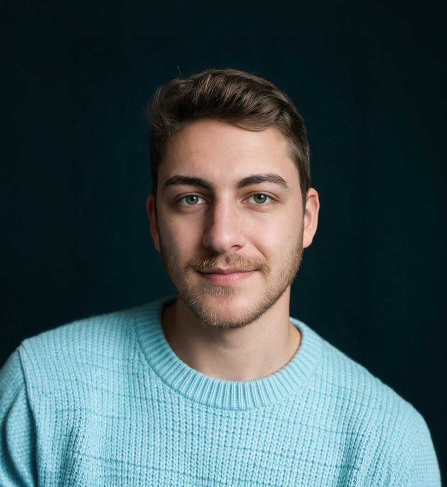

Eu desenho, testo e analiso.
Design, conteúdo e dados para fazer marcas crescerem.
Analista de growth
Projetos
-

01Fit Urban
Redesenhei o site da Fit Urban, e-commerce de moda fitness: da pesquisa com usuários ao design system e às telas, validadas em testes.
Objetivo: destravar o fluxo de compra do site.
Ver projeto completo -

02Alento
Identidade visual para um estúdio de pilates e bem-estar. O logo une um corpo em alongamento a um arco e flecha: puxar o arco é inspirar, soltar a flecha é expirar.
Objetivo: criar um símbolo que vai inspirar uma comunidade.
Ver projeto completo -

03Roteiros, captações e edições
Vídeos curtos para redes sociais, do roteiro à edição: conteúdo educativo, depoimentos e análises sobre o varejo de pijamas.
Objetivo: explicar, gerar confiança e atrair clientes com vídeos curtos.
Ver projeto completo -

04 · Projeto de estudoReservatório de Dopamina
Animações 2D curtas que explicam, em linguagem simples, o conteúdo do Reservatório de Dopamina para quem ainda não entende o que o Eslen Delanogare fala.
Objetivo: canal de aquisição para público frio.
Ver projeto completo

Vim do design.
Hoje cuido do growth.
Sou analista de growth marketing e vim do design. São mais de 4 anos em marketing digital, entre agência, e-commerce e minha própria empresa. Hoje, na Scart Company, cuido do growth dos clientes: conteúdo para Instagram, criativos de Meta Ads, identidade visual e estratégia de marca.
Na Agência Oásis, criei anúncios, vídeos e peças para várias marcas. Na Fit Urban, um e-commerce de moda fitness, fiz e-mail marketing e conteúdo, desenhei a UX/UI do site, apliquei SEO e rodei testes A/B, trabalhando direto com a diretoria nas decisões de marketing.
Uso GA4, Google Tag Manager e Microsoft Clarity para entender os dados, e RD Station e Edrone para CRM e automação. Como junto design e estratégia, consigo levar uma ideia do número até a peça no ar.